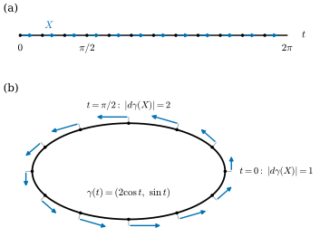
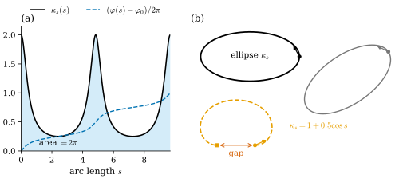

37.1 Plane Curves
Goals
- parametrized plane curve의 differential \(d\gamma\)를 “parameter 구간의 tangent vector를 평면의 vector로 늘이는 linear map”으로 설명하고, reparametrization이 그 늘이는 비율을 어떻게 바꾸는지 계산할 수 있다.
- regular curve(immersion)와 embedded curve의 차이를 예와 비예로 구분할 수 있다.
- signed curvature에서 tangent angle, tangent, curve를 차례로 적분해 plane curve를 복원하는 절차를 유도하고, rigid motion의 자유도와 closed curve가 되는 조건을 증명할 수 있다.
Prerequisites
- Chapter 32: discrete curve Definition 32.2.8, discrete tangent Definition 32.2.11, signed curvature와 tangent angle Proposition 32.2.2, turning angle Definition 32.3.1.
- parametrized curve Definition 4.1.1, regular curve Definition 4.2.1, reparametrization Definition 4.3.1, arc length parametrization Definition 4.3.7.
- signed curvature Definition 4.4.2, fundamental theorem of plane curves Theorem 4.4.10, rigid motion of the plane(Proposition 4.4.7 앞). 직관만 필요하면 Section 0.2로 충분하다.
- rotation index Definition 5.6.3와 Proposition 5.6.4(a).
Motivation
Chapter 36은 mesh 위의 함수와 그 “차분”을 discrete differential form이라는 하나의 언어로 정리하고, 그 언어로 cotan Laplacian까지 만들었다. 이 장은 그 언어가 가장 단순한 대상인 곡선에서 무엇이 되는지 보는 장이다. 곡선은 Chapter 32에서 이미 다루었다. plane curve의 curvature 하나에서 discrete curvature가 넷 나왔고, 그것들로 discrete curve를 움직이는 flow에서 무엇이 남는지 확인했다. 그 장이 남긴 질문은 둘이다. 닫힌 다각형의 turning angle의 합이 \(2\pi\)의 정수배라는 사실(Proposition 32.3.4)은 smooth curve의 어떤 정리와 대응하는가? 그리고 다각형을 움직일 때 시간 간격은 어떻게 골라야 하는가?
강의 순서를 따라 먼저 smooth curve를 다시 쓰고(37.1–37.3), 그다음 discrete curve로 옮긴다(37.4–37.5). 이 절은 그 출발점으로 plane curve의 differential을 다룬다. smooth curve에서 \(d\gamma\)가 하는 일을 정확히 적어 두면, Section 37.4에서 다각형의 edge vector \(e_i = \gamma_{i+1} - \gamma_i\)가 왜 그 discrete 판인지가 한 줄로 설명된다.
절의 뒷부분에서는 반대 방향을 묻는다. curvature를 알면 곡선을 되살릴 수 있는가? smooth curve에서는 적분 두 번으로 되살릴 수 있고, closed curve가 되려면 조건이 둘 필요하다. 이 조건들이 Section 37.2의 turning number와 Section 37.4의 discrete 복원으로 이어진다.
The Differential of a Parametrized Curve
parametrized plane curve(매개 평면곡선)는 열린구간 \(I\)에서 \(\R^2\)로 가는 smooth map \(\gamma\colon I \to \R^2\)이다(Definition 4.1.1). 원 \(\gamma(t) = (r\cos t, r\sin t)\)처럼 점마다 위치를 주는 함수다. 이 절에서 새로 할 일은 미분 \(\gamma'(t)\)를 “숫자의 순서쌍” 대신 “vector를 vector로 보내는 linear map”으로 읽는 것이다.
parameter 구간의 한 점 \(t\)에서 움직일 수 있는 방향은 수직선 위의 vector, 곧 실수 \(X\) 하나다. \(X \gt 0\)이면 \(t\)가 커지는 쪽, \(X \lt 0\)이면 작아지는 쪽이다. 이 vector를 \(\gamma\)로 보내면 평면의 vector가 된다.
이 linear map을 \(t\)에서 \(\gamma\)의 differential(미분)이라 부른다. 행렬로 쓰면 \(2 \times 1\) Jacobian matrix \(D\gamma(t) = \gamma'(t)\)이고(Notation), 새로운 대상이 아니라 같은 도함수를 “입력 vector를 받는 map”으로 본 것이다. 크기 \(\abs{d\gamma_t(X)} = \abs{\gamma'(t)}\,\abs{X}\)는 parameter 구간의 길이 \(\abs{X}\)가 곡선 위에서 얼마로 늘어나는지를 말한다. 이 비율이 speed \(\abs{\gamma'(t)}\)다(Definition 4.1.7).

Figure 37.1.1의 (a)와 (b)를 위아래로 비교해 보자. (a)의 수직선 위에서는 열두 화살표가 모두 같다. (b)에서 같은 화살표의 image를 보면 오른쪽 끝(\(t = 0\))의 화살표가 가장 짧고, 맨 위(\(t = \pi/2\))로 갈수록 길어진다. 곧 \(d\gamma\)는 점마다 다른 비율로 vector를 늘인다. 방향은 언제나 곡선에 접한다. 그래서 \(d\gamma\)는 두 정보를 함께 담는다. 하나는 곡선이 어느 쪽으로 가는지(tangent 방향)이고, 다른 하나는 parametrization이 곡선을 얼마나 빨리 지나가는지(speed)다.
Example 37.1.1 (differentials of the running examples). (a) 반지름 \(r\)인 원 \(\gamma(t) = (r\cos t, r\sin t)\)에서 \(d\gamma_t(X) = X(-r\sin t, r\cos t)\)이고 \(\abs{d\gamma_t(X)} = r\abs{X}\)이다. 모든 점에서 같은 비율 \(r\)로 늘인다. (b) ellipse \(\gamma(t) = (2\cos t, \sin t)\)에서 \(d\gamma_t(X) = X(-2\sin t, \cos t)\)이고 \(\abs{d\gamma_t(X)} = \abs{X}\sqrt{4\sin^2 t + \cos^2 t}\) \(= \abs{X}\sqrt{1 + 3\sin^2 t}\)이다. 비율은 \(t = 0, \pi\)에서 \(1\), \(t = \pm\pi/2\)에서 \(2\)다(Figure 37.1.1). 한 바퀴의 길이는 \(\int_0^{2\pi}\abs{\gamma'}\,dt = 9.6884\)이다(Chapter 32의 값과 같다).
Verification: verify/v-37-1-plane-curves.py
parametrization을 바꾸면 곡선의 모양은 그대로이고 늘이는 비율만 바뀐다. Definition 4.3.1처럼 \(h\colon J \to I\)가 smooth bijection이고 \(h'\)이 \(0\)이 아니면 \(\tilde\gamma = \gamma \circ h\)는 같은 trace의 다른 parametrization이다.
Proposition 37.1.2 (the differential under reparametrization). \(\tilde\gamma = \gamma \circ h\)이면 모든 \(u \in J\)와 \(Y \in \R\)에 대하여
이다. 특히 \(\abs{d\tilde\gamma_u(Y)} = \abs{h'(u)}\,\abs{\gamma'(h(u))}\,\abs{Y}\)이다.
Proof. chain rule에서 \(\tilde\gamma'(u) = h'(u)\,\gamma'(h(u))\)이므로, (37.1.1)에서 \(d\tilde\gamma_u(Y) = Y h'(u)\gamma'(h(u)) = d\gamma_{h(u)}(h'(u)Y)\)이다.
곧 reparametrization은 parameter 구간의 vector를 먼저 \(h'(u)\)배 한 뒤 \(d\gamma\)로 보내는 것이다. 늘이는 비율이 어디서나 \(1\)이 되도록 \(h\)를 고른 것이 arc length parametrization이다(Definition 4.3.7): 모든 \(X\)에서 \(\abs{d\gamma_s(X)} = \abs{X}\). discrete curve에는 parameter 구간이 처음부터 없다. 주어지는 것은 점의 목록뿐이므로, discrete 쪽에서는 각 edge가 “자기 길이만큼의 구간”을 차지한다고 보는 것, 곧 arc length parametrization이 자연스러운 선택이다.
Regular Curves and Embedded Curves
\(d\gamma_t\)는 \(\R\)에서 \(\R^2\)로 가는 linear map이므로 injective이거나 \(0\)이다. injective라는 것은 \(\gamma'(t) \neq 0\)이라는 것, 곧 곡선이 그 점에서 멈추지 않는다는 것이다. 모든 점에서 이 조건이 성립하는 곡선이 regular curve(정칙곡선)다(Definition 4.2.1). differential이 모든 점에서 injective인 map을 일반적으로 immersion(몰입)이라 부르므로(Section 14.1), regular curve는 곡선의 immersion이다.
regular이면 unit tangent \(\mathbf{t} = \gamma'/\abs{\gamma'}\)가 모든 점에서 정의되고 매끄럽다. 그래서 normal \(\mathbf{n}_s = J\mathbf{t}\)와 curvature도 정의된다. 거꾸로 \(\gamma'\)이 \(0\)이 되는 점에서는 \(\gamma\)가 매끄러워도 그런 양이 정의되지 않을 수 있다.
Example 37.1.3 (regular curves). 원, ellipse, flower curve \(r(t) = 1 + 0.3\cos 5t\)(Example 32.2.1)는 모두 regular다. flower curve에서는 \(\abs{\gamma'}^2 = r^2 + r'^2 \ge r^2 \ge 0.49\)이다. \(\gamma(t) = (t, t^3)\)도 regular다(\(\gamma' = (1, 3t^2) \neq 0\)). 이 곡선은 \(t = 0\)에서 curvature가 \(0\)이 되지만 regular인 것과는 상관없다. regularity는 일계도함수의 조건이고 curvature는 이계도함수의 양이다.
Non-example 37.1.4 (a smooth curve with a cusp). \(\gamma(t) = (t^3, t^2)\)은 smooth map이지만 \(\gamma'(t) = (3t^2, 2t)\)가 \(t = 0\)에서 \(0\)이므로 regular가 아니다. trace는 원점에서 뾰족하다. \(t \neq 0\)에서 unit tangent는 \(\mathbf{t}(t) = (3\abs{t}, 2\sgn t)/\sqrt{9t^2 + 4}\)이고 \(t \to 0^\pm\)에서 \((0, \pm1)\)로 가므로, \(\mathbf{t}\)를 \(t = 0\)까지 연속으로 이을 수 없다(Exercise 37.1.2). 축을 바꾼 \((t^2, t^3)\)으로 같은 cusp를 쓰고 trace의 모양으로 본 것이 Non-example 4.1.9다. 다각형도 vertex 근처에서 속도가 \(0\)으로 줄어들도록 parametrize하면 smooth map이 되지만, vertex에서 tangent를 정할 수 없다는 사정은 그대로다.
regular는 점 하나 근처의 조건이다. 곡선 전체가 스스로를 가로지르는지는 따로 묻는다. 곡선 \(\gamma\colon I \to \R^2\)가 injective이고, trace \(\gamma(I)\)에 subspace topology를 주었을 때 \(\gamma\colon I \to \gamma(I)\)의 inverse가 연속이면 \(\gamma\)를 embedded curve(매장된 곡선)라 한다. 곧 \(\gamma\)가 topological embedding(위상 매장, Definition 3.3.8)이다. regular이면서 embedding인 map이 smooth embedding이다(Section 14.3).
Example 37.1.5 (immersed but not embedded). figure-eight curve \(\gamma(t) = (\sin t, \sin t\cos t)\), \(t \in \R\)는 \(\gamma'(t) = (\cos t, \cos 2t)\)이고, \(\cos t = 0\)이면 \(\cos 2t = -1\)이므로 \(\gamma' \neq 0\)이다. 곧 regular(immersed)다. 그러나 \(\gamma(0) = \gamma(\pi) = (0, 0)\)이므로 \([0, 2\pi)\)로 제한해도 injective가 아니고, 원점에서 두 가지가 가로지른다. 이 곡선은 Section 37.2에서 turning number가 \(0\)인 예로 다시 쓴다.
Non-example 37.1.6 (injective but not embedded). 같은 figure-eight을 열린구간으로 제한한 \(\gamma\colon (0, 2\pi) \to \R^2\), \(\gamma(t) = (\sin t, \sin t\cos t)\)는 regular이고 injective이며(Exercise 37.1.3), trace는 여전히 8자 전체다. 원점은 \(t = \pi\)에서만 지난다. 그러나 inverse는 원점에서 연속이 아니다. \(t \to 0^+\)이면 \(\gamma(t)\)는 원점에 다가가지만 그 parameter는 \(0\)으로 가고, 원점 자신의 parameter는 \(\pi\)이기 때문이다. 정의역의 열린 끝이 trace의 다른 부분에 달라붙어 있는 것이다. injective immersion이라도 embedding이 아닐 수 있다.
이 장에서 closed curve는 Definition 5.6.1처럼 주기 \(T\)인 regular map \(\gamma\colon \R \to \R^2\)로 다룬다. 주기 전체를 정의역으로 쓰므로 열린 끝이 생기지 않는다. 한 주기 \([0, T)\)에서 injective인 closed curve가 simple closed curve이고, figure-eight처럼 스스로 가로지르는 closed curve도 regular할 수 있다. Section 37.2는 이렇게 스스로 가로질러도 되는 regular closed curve를 연속적으로 변형하는 문제를 다룬다.
Tangent, Normal, and Curvature, Recalled
regular curve를 arc length \(s\)로 parametrization하면 \(\mathbf{t}(s) = \gamma'(s) = d\gamma_s(1)\)이고, normal은 \(\mathbf{n}_s = J\mathbf{t}\), signed curvature는 \(\mathbf{t}' = \kappa_s\mathbf{n}_s\)의 coefficient \(\kappa_s\)다. 이 정의와 부호, 그리고 같은 수를 주는 네 특징은 Section 32.2에 정리해 두었고 여기서 다시 정의하지 않는다. 이 절에서 쓰는 것은 그중 (A), 곧 tangent angle \(\varphi\)를 \(\mathbf{t} = (\cos\varphi, \sin\varphi)\)인 연속함수로 잡으면
라는 사실이다(Proposition 32.2.2, Theorem 4.4.9). curvature를 적분하면 tangent가 돈 각이 나오고, tangent를 적분하면 위치가 나온다. 다음 소절의 복원 절차는 이 두 적분이다. osculating circle(Definition 4.5.1)도 같은 \(\kappa_s\)를 주지만, 이 장에서는 쓰지 않는다.
Recovering a Curve from Its Curvature
curvature는 rigid motion에 대해 변하지 않는다. 회전하고 옮겨도 tangent가 도는 빠르기는 같기 때문이다(Proposition 4.4.7). fundamental theorem of plane curves(Theorem 4.4.10, Corollary 4.4.11)는 그 반대도 성립한다고 말한다. arc length의 함수로 준 \(\kappa_s\)가 곡선을 rigid motion을 제외하고 정한다. 증명은 Chapter 4에 있고, 여기서는 그 증명이 사실상 하나의 algorithm이라는 점만 짚는다.
Derivation. \(\kappa\colon [0, L] \to \R\)가 주어졌다고 하자. 찾는 곡선이 arc length로 parametrization되어 있다면 (37.1.3)에서 tangent angle은 \(\kappa\)의 적분이고, \(\gamma' = \mathbf{t}\)이므로 곡선은 tangent의 적분이다. 곧 세 단계로 된다.
거꾸로 이렇게 만든 \(\gamma\)는 \(\abs{\gamma'} = \abs{\mathbf{t}} = 1\)이고, \(\mathbf{t}' = \varphi'(-\sin\varphi, \cos\varphi) = \kappa\,J\mathbf{t}\)이므로 signed curvature가 \(\kappa\)다. 이것이 (4.4.8)이다. 적분 상수는 \(\varphi_0\)(처음 방향, 숫자 하나)과 \(p_0\)(처음 위치, 숫자 둘)뿐이다. \(\varphi_0\)을 \(\alpha\)만큼 바꾸면 \(\mathbf{t}\)가 모두 \(R_\alpha\)만큼 돌아 곡선 전체가 \(p_0\) 둘레로 회전하고, \(p_0\)을 바꾸면 곡선 전체가 translate된다. 이 세 숫자가 정확히 rigid motion of the plane의 자유도다.
\(\kappa\)가 상수 \(c \neq 0\)이면 (37.1.4)를 손으로 적분할 수 있고 반지름 \(1/\abs{c}\)인 원이 나온다(Exercise 37.1.4). 그러나 대부분의 \(\kappa\)에서 두 번째 적분은 닫힌 꼴로 계산되지 않는다. 그래서 실제로는 적분을 수치로 한다. 아래 Implementation은 \(\kappa\)를 같은 간격의 점에서 sampling한 값으로 사다리꼴 공식을 쓴다.
이제 closed curve를 보자. 주기 \(L\)인 \(\kappa\)를 주고 (37.1.4)로 곡선을 만들면, 그 곡선이 다시 닫히는가? 꼭 그렇지는 않다. tangent도 제자리로 돌아와야 하고, 위치도 제자리로 돌아와야 하기 때문이다.
Proposition 37.1.7 (closing conditions). \(\kappa\colon \R \to \R\)가 매끄럽고 주기 \(L \gt 0\)인 함수이고, \(\varphi\)와 \(\gamma\colon \R \to \R^2\)를 (37.1.4)로 정했다고 하자. 그러면 \(\gamma\)가 주기 \(L\)인 closed curve일 필요충분조건은
이다. 이때 \(\gamma\)의 rotation index는 \(\frac{1}{2\pi}\int_0^L\kappa\,ds\)이다.
이 명제가 말하는 것. (i)은 “한 바퀴 돌았을 때 tangent가 처음 방향으로 돌아온다”, (ii)는 “tangent를 다 더했을 때 처음 위치로 돌아온다”이다. (i)만으로는 부족하다.
Proof idea: \(\kappa\)가 주기 \(L\)이므로 한 주기 동안 각이 늘어나는 양은 출발점에 무관하다. (i)이면 tangent가 주기적이고, 그러면 위치의 변화도 출발점에 무관한 하나의 vector (ii)가 된다.
Proof. \(\Theta = \int_0^L\kappa\,ds\)라 하자. \(\kappa\)가 주기 \(L\)이므로 모든 \(s\)에서 \(\varphi(s + L) - \varphi(s) = \int_s^{s+L}\kappa = \Theta\)이다(주기함수의 한 주기 적분은 구간의 위치에 무관하다). (\(\Leftarrow\)) (i)에서 \(\Theta = 2\pi j\)(\(j \in \Z\))이면 \(\mathbf{t}(s + L)\) \(= (\cos(\varphi(s) + 2\pi j), \sin(\varphi(s) + 2\pi j))\) \(= \mathbf{t}(s)\)이므로 \(\mathbf{t}\)는 주기 \(L\)이다. 그러면 \(\gamma(s + L) - \gamma(s) = \int_s^{s+L}\mathbf{t} = \int_0^L\mathbf{t}\)이고, (ii)에서 이것은 \(0\)이다. \(\gamma\)는 매끄럽고 \(\abs{\gamma'} = 1\)이므로 regular이고, 따라서 주기 \(L\)인 closed curve다. (\(\Rightarrow\)) \(\gamma\)가 주기 \(L\)이면 \(\mathbf{t} = \gamma'\)도 주기 \(L\)이므로 \((\cos\varphi(L), \sin\varphi(L)) = (\cos\varphi(0), \sin\varphi(0))\)이고 \(\Theta = \varphi(L) - \varphi(0) \in 2\pi\Z\)이다. 또 \(\int_0^L\mathbf{t} = \gamma(L) - \gamma(0) = 0\)이다. 마지막 문장: \(\varphi\)는 \(\gamma\)의 연속인 tangent angle이므로 Proposition 5.6.4(a)에서 rotation index는 \((\varphi(L) - \varphi(0))/2\pi = \Theta/2\pi\)이다.
Example 37.1.8 (the ellipse, recovered numerically). ellipse \((2\cos t, \sin t)\)의 \(\kappa_s\)를 arc length의 함수로 \(m + 1\)개 점 \(s_j = jL/m\)(\(L = 9.6884\))에서 계산해 Implementation에 넣고, 결과를 가장 잘 맞는 rigid motion으로 원래 점 \(\gamma(t(s_j))\)에 겹쳐 보면 최대 거리는 \(m = 100, 200, 400, 800\)에서 \(2.6 \times 10^{-3}\), \(6.4 \times 10^{-4}\), \(1.6 \times 10^{-4}\), \(4.0 \times 10^{-5}\)이다. \(m\)을 두 배로 하면 \(1/4\)이 된다. \(\kappa_s\)의 적분은 \(2\pi\)이고(rotation index \(1\)), 끝점과 시작점의 거리는 \(2 \times 10^{-9}\) 이하로 (ii)도 성립한다. ellipse의 arc length parametrization에는 닫힌 꼴이 없으므로(Example 4.3.12) \(t(s_j)\)는 수치적으로 구했다.
Verification: verify/v-37-1-plane-curves.py
Example 37.1.9 (total curvature \(2\pi\) is not enough). \(\kappa(s) = 1 + 0.5\cos s\)(주기 \(2\pi\))이면 \(\int_0^{2\pi}\kappa = 2\pi\)이므로 (i)은 성립한다. \(\varphi_0 = 0\)이면 \(\varphi(s) = s + 0.5\sin s\)이고, \(s \mapsto 2\pi - s\)를 대입하면 \(\sin\varphi\)의 적분은 \(0\)이다. 그러나 수치적분하면 \(\int_0^{2\pi}\cos\varphi\,ds = -1.5222\)이다. Bessel function \(J_1\)의 적분 표현을 쓰면 일반적으로 \(\int_0^{2\pi}\cos(s + a\sin s)\,ds = -2\pi J_1(a)\)이고, 이 값은 \(-2\pi J_1(0.5)\)이다. 곧 (ii)가 깨지고, 곡선은 한 바퀴 돈 뒤 출발점에서 \(1.5222\)만큼 떨어진 곳에 출발할 때와 같은 방향으로 도착한다(Figure 37.1.2(b)의 주황 파선). coefficient \(0.5\)를 \(a\)로 바꾸고 \(a\)를 키우면 이 간격이 \(0\)이 되는 \(a\)가 있다(Exercise 37.1.5).
Verification: verify/v-37-1-plane-curves.py

Figure 37.1.2를 왼쪽부터 보자. (a)의 검은 곡선은 tangent가 단위 길이당 도는 각이다. 파란 파선은 그것을 쌓아 올린 각이고, 한 바퀴 끝에서 정확히 \(1\)(곧 \(2\pi\))에 닿는다. 이것이 조건 (i)이다. (b)의 검은 타원과 회색 타원은 같은 curvature 자료에서 나왔고, 처음 방향과 처음 위치만 다르다. 이것이 rigid motion의 자유도다. 마지막으로 주황 파선을 따라가 보자. tangent가 도는 각의 합은 역시 \(2\pi\)라서 끝에서 처음과 같은 방향(오른쪽)을 향하지만, 시작점보다 왼쪽에서 끝난다. 조건 (ii)가 깨진 것이다. Section 37.4는 이 두 조건의 discrete 판을 다각형에서 정확한 등식으로 다시 얻는다.
Animation 37.1.1은 (37.1.4)의 세 적분을 시간에 따라 진행시킨다. 왼쪽 위 그래프에서 \(s\)까지의 넓이(하늘색)가 쌓이면 왼쪽 아래의 각 \((\varphi - \varphi_0)/2\pi\)가 올라가고, 오른쪽에서는 그 각의 방향(파란 화살표)으로 곡선이 한 걸음씩 그려진다. 지켜볼 것은 끝 순간이다. ellipse의 curvature에서는 각이 정확히 \(1\)(곧 \(2\pi\))에 닿고 곡선이 출발점으로 돌아온다. \(\kappa = 1 + 0.5\cos s\)에서도 각은 \(1\)에 닿아 처음 방향으로 끝나지만, 끝점이 출발점에서 떨어져 있다.
curve_from_curvature와 같은 사다리꼴 공식(\(m = 800\))으로 (37.1.4)를 \(s\)를 따라 진행시킨다. 앞부분은 ellipse \((2\cos t, \sin t)\)의 \(\kappa_s\)(arc length의 함수, \(L = 9.6884\), \(p_0 = (2, 0)\), \(\varphi_0 = \pi/2\), Example 37.1.8)이고, 뒷부분은 \(\kappa(s) = 1 + 0.5\cos s\)(\(0 \le s \le 2\pi\), \(\varphi_0 = 0\), Example 37.1.9)이다.
읽는 법: 왼쪽 위는 \(\kappa(s)\)(검정)와 지금까지의 넓이(하늘색), 주황 세로선이 지금의 \(s\)다. 왼쪽 아래 파란 곡선이 \((\varphi(s) - \varphi_0)/2\pi\), 회색 점선이 \(1\)이다. 오른쪽의 검은 점이 출발점, 움직이는 점과 파란 화살표가 지금의 위치와 tangent다. 위의 숫자가 \(s\)와 \(\int\kappa\,ds/2\pi\)다.
볼 것: ellipse에서는 \(\kappa_s\)의 봉우리(\(\kappa_s = 2\), ellipse의 뾰족한 양 끝)를 지날 때 각이 빠르게 오르고 곡선이 급히 꺾인다. \(s = L\)에서 각이 \(1.000\)이 되고 곡선이 닫힌다. 두 번째 자료도 각은 \(1.000\)에 닿지만 끝점과 출발점 사이에 길이 \(1.5222\)의 틈(주홍 선분)이 남는다.
본문과의 연결: Proposition 37.1.7의 (i)은 두 경우 모두 성립하고 (ii)는 두 번째에서 깨진다. 정지 그림은 Figure 37.1.2다.
시간: 0–1.5초 처음 상태, 1.5–8.5초 ellipse를 적분한다, 8.5–10.5초 closed curve, 10.5–16.5초 \(\kappa = 1 + 0.5\cos s\)를 적분한다, 16.5–20초 남은 틈.Summary
- plane curve의 differential \(d\gamma_t(X) = X\gamma'(t)\)는 parameter 구간의 vector를 곡선의 tangent vector로 늘이는 linear map이다. reparametrization은 늘이는 비율만 바꾸고 (37.1.2), arc length parametrization은 그 비율이 \(1\)인 것이다.
- regular curve는 \(d\gamma\)가 모든 점에서 injective인 곡선, 곧 immersion이다. embedded curve는 trace 위로의 inverse가 연속인 injective 곡선이다. figure-eight은 immersed지만 embedded가 아니고, 열린구간 \((0, 2\pi)\)로 제한해 injective로 만들어도 embedded가 아니다.
- signed curvature에서 곡선을 복원하는 절차는 각 → tangent → 위치의 두 번의 적분 (37.1.4)이고, 적분 상수 셋이 rigid motion의 자유도다.
- 주기적인 \(\kappa\)로 만든 곡선이 닫히려면 \(\int\kappa \in 2\pi\Z\)와 \(\int\mathbf{t} = 0\)이 모두 필요하다(Proposition 37.1.7). 앞의 정수는 rotation index다.
다음 절에서는 이 정수, 곧 rotation index(turning number)를 자세히 본다. turning number는 곡선이 점을 감는 횟수(winding number)와 어떻게 다르고, 곡선을 regular하게 유지하며 변형할 때 왜 바뀌지 않으며, 거꾸로 turning number가 같은 두 곡선은 언제나 그렇게 변형해 이을 수 있는가?
Exercises
Exercise 37.1.1 ★ ellipse \(\gamma(t) = (2\cos t, \sin t)\)를 \(\tilde\gamma(u) = \gamma(2u)\)(\(0 \le u \le \pi\))로 다시 parametrize하자. (37.1.2)로 \(d\tilde\gamma_u(1)\)을 구하고, \(u = 0\)과 \(u = \pi/4\)에서 그 길이를 구하여라. 같은 점에서 \(d\gamma\)의 비율과 비교하면 몇 배인가?
Solution
\(h(u) = 2u\), \(h' = 2\)이므로 \(d\tilde\gamma_u(1) = d\gamma_{2u}(2)\) \(= 2\gamma'(2u) = 2(-2\sin 2u, \cos 2u)\)이다. \(u = 0\)에서 \(2(0, 1)\), 길이 \(2\)이고, \(u = \pi/4\)에서 \(2(-2, 0)\), 길이 \(4\)이다. 같은 점은 각각 \(t = 0\)과 \(t = \pi/2\)이고 거기서 \(\abs{\gamma'} = 1, 2\)이므로(Example 37.1.1), 어디서나 정확히 \(h' = 2\)배다. 방향은 그대로다.
Exercise 37.1.2 ★ Non-example 37.1.4의 \(\gamma(t) = (t^3, t^2)\)에서 \(t \neq 0\)일 때 \(\mathbf{t}(t) = (3\abs{t}, 2\sgn t)/\sqrt{9t^2 + 4}\)임을 보이고, 양쪽 극한을 구하여라. trace가 \(y = \abs{x}^{2/3}\)의 그래프임을 보이고, 그래프가 원점에서 미분가능하지 않음을 확인하여라.
Solution
\(\gamma'(t) = (3t^2, 2t)\)이고 \(\abs{\gamma'} = \abs{t}\sqrt{9t^2 + 4}\)이므로 \(\mathbf{t} = \gamma'/\abs{\gamma'}\) \(= (3t^2/\abs{t},\ 2t/\abs{t})/\sqrt{9t^2 + 4}\) \(= (3\abs{t}, 2\sgn t)/\sqrt{9t^2 + 4}\)이다. \(t \to 0^+\)이면 \((0, 1)\), \(t \to 0^-\)이면 \((0, -1)\)이다. \(x = t^3\)에서 \(t = x^{1/3}\)(실수 세제곱근)이므로 \(y = t^2 = \abs{x}^{2/3}\)이다. \(x \gt 0\)에서 \(y' = \tfrac23x^{-1/3} \to \infty\)이므로 원점에서 미분계수가 없다. 진행 방향이 원점에서 아래로 내려오다가 위로 올라가는 cusp이다.
Exercise 37.1.3 ★ Non-example 37.1.6의 \(\gamma(t) = (\sin t, \sin t\cos t)\), \(0 \lt t \lt 2\pi\)가 injective임을 보여라. \(p_m = \gamma(1/m)\)이라 하면 \(p_m \to \gamma(\pi)\)이지만 \(\gamma^{-1}(p_m) \not\to \pi\)임을 확인하여라.
Solution
injective: \(\gamma(t) = \gamma(t')\)이면 \(\sin t = \sin t'\)이므로 \((0, 2\pi)\) 안에서 \(t' = t\), \(t' = \pi - t\), \(t' = 3\pi - t\) 가운데 하나다. \(t' = \pi - t\)이면 \(\cos t' = -\cos t\)이므로 둘째 성분에서 \(\sin t\cos t = -\sin t\cos t\), 곧 \(\sin t\cos t = 0\)이다. \(t' = \pi - t \in (0, 2\pi)\)이려면 \(t \lt \pi\)이므로 \(t = \pi/2\)이고 \(t' = t\)이다. \(t' = 3\pi - t\)이면 \(t \gt \pi\)이고 같은 계산으로 \(t = 3\pi/2 = t'\)이다. 따라서 \(\gamma\)는 injective다. \(p_m = (\sin(1/m), \sin(1/m)\cos(1/m))\) \(\to (0, 0) = \gamma(\pi)\)이지만 \(\gamma^{-1}(p_m) = 1/m \to 0 \neq \pi\)이다. 연속이면 수열의 극한을 보존해야 하므로 \(\gamma^{-1}\)은 원점에서 연속이 아니다. 곧 \(\gamma\)는 regular이고 injective지만 embedded curve가 아니다.
Exercise 37.1.4 ★★ 상수 \(c\)와 \(L \gt 0\)에 대해 \(\kappa \equiv c\)를 주기 \(L\)인 함수로 보자. Proposition 37.1.7로 (37.1.4)의 곡선이 주기 \(L\)인 closed curve가 될 필요충분조건이 \(cL \in 2\pi\Z \setminus \{0\}\)임을 보이고, 그때의 곡선과 rotation index를 구하여라.
Solution
(i)은 \(\int_0^L c\,ds = cL \in 2\pi\Z\)이다. \(c = 0\)이면 \(\varphi \equiv \varphi_0\)이고 \(\int_0^L\mathbf{t} = L(\cos\varphi_0, \sin\varphi_0) \neq 0\)이므로 (ii)가 깨진다. \(cL = 2\pi j\), \(j \neq 0\)이면 \(\varphi = \varphi_0 + cs\)이고 \(\int_0^L(\cos(\varphi_0 + cs), \sin(\varphi_0 + cs))\,ds\) \(= \tfrac1c\bigl(\sin(\varphi_0 + cs), -\cos(\varphi_0 + cs)\bigr)\big|_0^L\) \(= 0\)이다(\(cL\)이 \(2\pi\)의 정수배). 따라서 필요충분조건은 \(cL \in 2\pi\Z \setminus \{0\}\)이다. 이때 곡선은 반지름 \(1/\abs{c}\)인 원을 \(\abs{j}\)바퀴 도는 것이고(\(c \gt 0\)이면 반시계, \(c \lt 0\)이면 시계 방향), rotation index는 \(cL/2\pi = j\)이다.
Exercise 37.1.5 ★★ Coding. \(\kappa_a(s) = 1 + a\cos s\)(\(0 \le s \le 2\pi\), \(\varphi_0 = 0\))로 만든 곡선의 간격 \(\gamma(2\pi) - \gamma(0)\)을 Implementation으로 계산하는 함수를 만들어라. Example 37.1.9의 \(a = 0.5\)를 확인하고, \([3, 4.5]\)에서 이분법으로 곡선이 닫히는 \(a\)를 찾아라. 그 곡선의 rotation index는 얼마인가?
Solution
def gap(a, m=4000):
s = np.linspace(0, 2 * np.pi, m + 1)
_, G = curve_from_curvature(1 + a * np.cos(s), 2 * np.pi)
return G[-1, 0] - G[0, 0] # the y-component is 0 by the symmetry s -> 2 pi - s
print(f"gap(0.5) = {gap(0.5):.4f}")
lo, hi = 3.0, 4.5 # gap(3) < 0 < gap(4.5)
for _ in range(50):
mid = 0.5 * (lo + hi)
lo, hi = (lo, mid) if gap(lo) * gap(mid) <= 0 else (mid, hi)
print(f"closes at a = {lo:.6f}")Implementation의 코드를 먼저 실행한 뒤 실행한다. 출력은 다음과 같다.
gap(0.5) = -1.5222
closes at a = 3.831707\(y\) 성분은 모든 \(a\)에서 \(0\)이다. \(\varphi(2\pi - s) = 2\pi - s + a\sin(2\pi - s)\) \(= 2\pi - \varphi(s)\)이므로 \(\sin\varphi(2\pi - s) = -\sin\varphi(s)\)이고, \(\sin\varphi\)의 적분이 \(0\)이기 때문이다. 그래서 \(x\) 성분 하나가 \(0\)이 되는 \(a\)만 찾으면 된다. 찾은 \(a = 3.8317\)은 Bessel function \(J_1\)의 첫 양의 영점과 같다(Example 37.1.9에서 간격은 일반적으로 \(-2\pi J_1(a)\)이다). 이 \(a\)에서 (i)과 (ii)가 모두 성립하므로 Proposition 37.1.7에 의해 곡선은 닫히고, rotation index는 \(\frac{1}{2\pi}\int_0^{2\pi}(1 + a\cos s)\,ds = 1\)이다. \(a \gt 1\)이므로 \(\kappa\)는 \(s = \pi\) 근처에서 음수가 되어, 곡선은 그 근처에서 오른쪽으로 꺾인다.